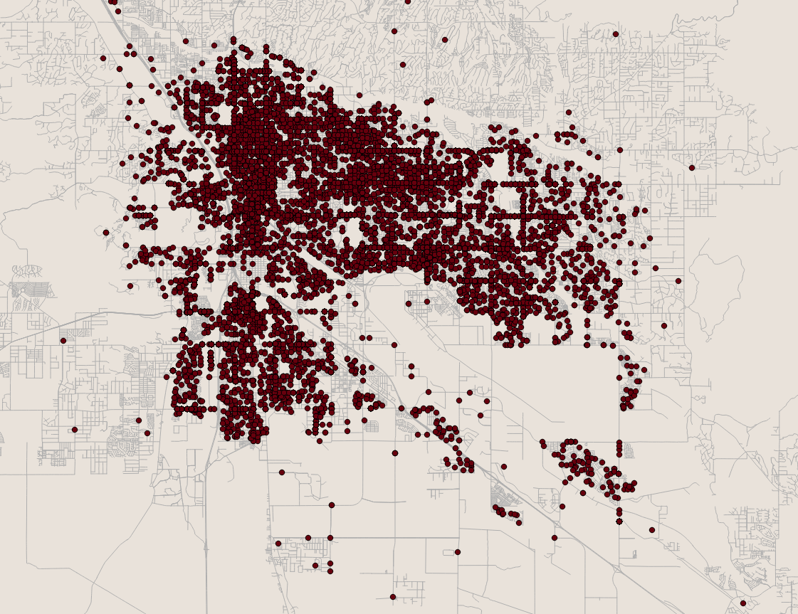

Journalism & Mapping
An introduction to GIS analysis
Eric Sagara
Reveal / Center for Investigative Reportingesagara@cironline.org | @esagara
Why map?
Mapping and GIS analysis is used to explore spatial relationships.
This is a good example of mapping

This is not

How do we map?
There are a variety of GIS software packages available
ArcGIS
Expensive, but fairly comprehensive in its featuresQGIS
Free, not as rich in features (but getting better every day)GDAL
A powerful, free command line tool. It has the highest learning curve and no graphical interface.What can we map?
Many datasets today have a geographic component to it, whether it be:
- An address
- Latitude and longitude
- County, city or state
- Census tracts
- Congressional districts
- Or other custom boundaries
Some datasets are designed specifically for GIS
Shapefiles
The most common format for geographic data. It is actually a set of at least three files.
- .shp - the actual shapefile
- .shx - an index of the feature geometry
- .dbf - the data attached to features
KML files
Also very common. It is a single file used to work with Google map products such as Fusion Tables, Google Maps and Google Earth. This file format is typically generated by someone wishing to display data online.
GeoJSON
Also meant to display geographic data online. It's a single file for use with JavaScript mapping libraries such as Leaflet and D3.
Geodatabases
These are basically shapefiles on steroids. They can be very large in size and difficult to load into open source software such as QGIS (but it is possible).
What types of geographic data are there?
There are two basic types of geographic data
Vector
- Points
Each represents a single location, such as an address. - Lines
Typically used to represent roads, waterways, trails, etc. - Polygons
A boundary or a zone (such as a county, city or state)
Raster
- Elevation data
- Satellite imagery
- Aerial imagery
We find stories combining different datasets and techniques
The techniques we use can drive the story we tell
Basic point map
Chloropleth map
Binned map
Heat map
A word about projections
Projections are how we draw a three dimensional sphere on a two dimensional surface

Different projections are used to preserve different properties:
- Distance
- Direction
- Area
- Shape
Some common projections
Mercator
Albers Equal Area Conic
Lambert cylindrical equal-area
Why do we need to keep an eye on projections?
All projections distort the world to some extent. Because of this we need to make sure datasets share the same projection when compared.
A warning
Mapping software will reproject "on the fly." This is only for viewing purposes; the underlying data is not changed. Your analysis is most likely incorrect if projections do not match.
And then there is datum
Datum is the coordinate reference system. In other words, it is how we measure locations on Earth.
Some common datum are:
- North American Datum 1927 (NAD27)
- North American Datum 1983 (NAD83)
- World Geodetic System 1984 (WGS84)
Why do we match datum between files?
NAD27 and NAD83 sound similar. However they are based on different mathematical representations of the Earth's shape. The same location in two different datum can be off by a few hundred meters.
And also map units
Many geographic datasets have units set to degrees. Degrees are not a measure of distance or area, but rather the angle of a point relative to the center of the earth.
If your analysis requires measurement of distance or area, convert your data to a projection and datum that support map units in meters or feet.